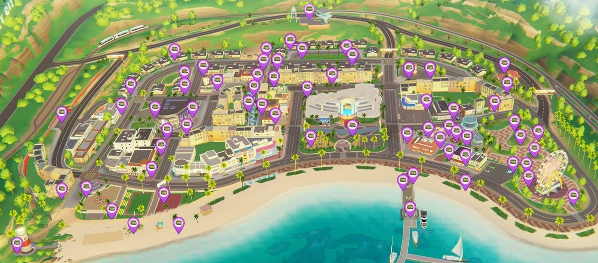

Interactive Map

//-------------------------------------------------------- // COMPLETED //--------------------------------------------------------Map image widely circulated online. Original creator unknown. Please contact me for credit or removal.
Optimal Route for Box Runs
A map with arrows showing the suggested route for visiting each box location will go here.
Locations
*Spawn locations are continuously verified as new evidence is collected. Locations believed to be retired remain documented until their current status can be confirmed.
No locations match the selected filter.